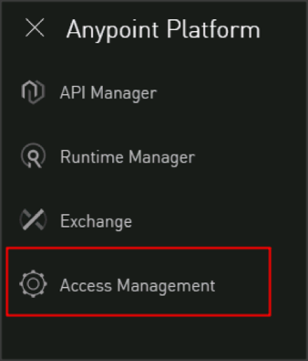
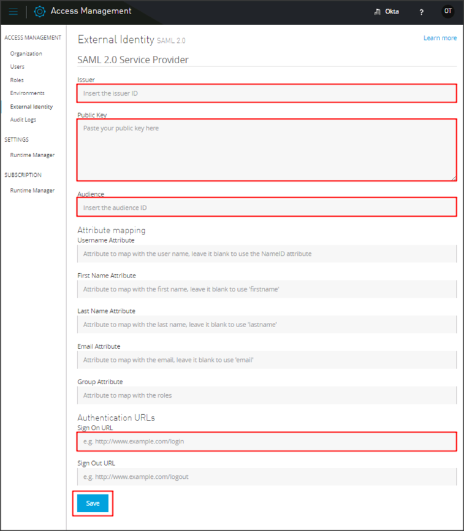

Login to your MuleSoft - Anypoint Platform account as an administrator.
Click the dropdown icon, then select Access Management.

Click External Identity.
Click the If you would like to configure single sign on with a SAML 2.0 provider you can get started here link, then enter the following (see screen shot at the end of step for reference):
Issuer: Copy and paste the following:
Sign into the Okta Admin Dashboard to generate this variable.
Public Key: Copy and paste the following:
Sign into the Okta Admin Dashboard to generate this variable.
Audience:
Sign into the Okta Admin Dashboard to generate this variable.
http://www.myCompany.com/exk18o312mrXCbUs21d8
exk18o312mrXCbUs21d8.anypoint.mulesoft.com
Sign On URL: Copy and paste the following:
Sign into the Okta Admin Dashboard to generate this variable.
Click Save.

Done!
Notes:
IdP-initiated flows and Just In Time (JIT) Provisioning are supported.
SP-initiated flows are not supported.